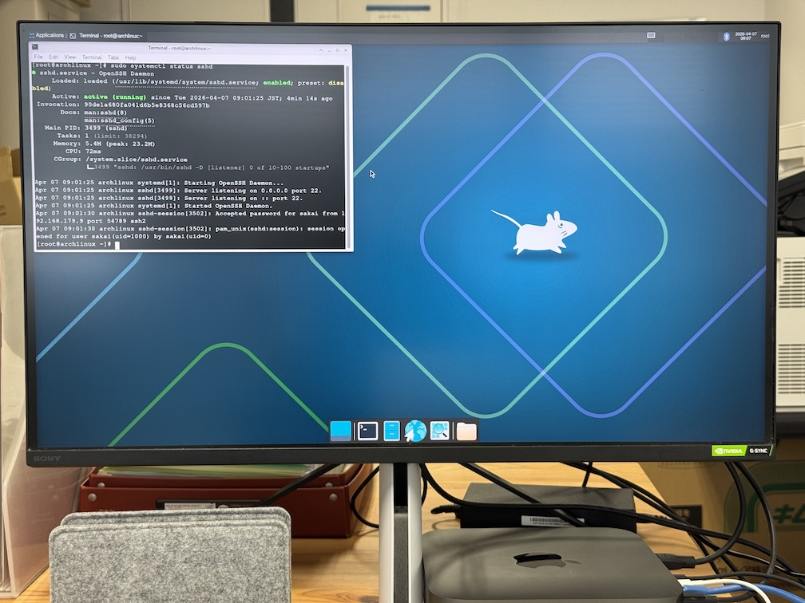
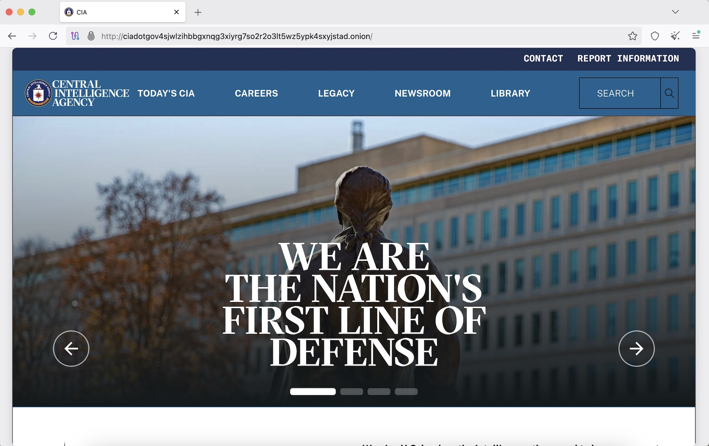

Log #031: Love is an Open Source : Maybe it's the coffee talking, or chocolate sundae.
Location: TAKAO 599 CAFE / Activity: Post-hiking Reflection
Status: Source Code Released to GitHub (sakailab-log)
高尾山の険しい路を下り、火照った身体を 599 CAFE の椅子に預ける。
テーブルに運ばれてきたのは、琥珀色のコーヒーと、宝石のように光るチョコレートサンデー。
テラスから吹き込む春風に乗って、ふと「アナと雪の女王」のメロディ ―― Love is an open door ―― が聞こえてきた気がした。
コーヒーのカフェインのせいか、はたまた甘いサンデーの香りのせいか。
私は MacBook Pro を開き、git push のコマンドを打ち込んだ。
Log #033: 鉄壁の T2 攻略と、黒毛和牛の誓い ―― Leave it in the past.
Device: Intel Mac mini 2020 (T2 Chip) / OS: Arch Linux -> T2 Ubuntu v24
Status: Bootloader Unlocked & System Replaced
Apple T2 チップ。それはスライド（情報セキュリティ07_Antivirus.pdf）にある「セキュアブート」の権化だ。
外部ブータブルディスクを拒絶し、署名なきカーネルを焼き払うその鉄壁の防御を、私は悪戦苦闘の末に突破した。
リカバリモードに潜り込み、セキュリティポリシーを最下層まで引き下げ、Arch Linux のインストールに成功したその瞬間、私は確かな「勝利」を確信したのだ。

T2 チップの支配を脱し、Arch Linux が息を吹き返した瞬間
🍱 黒毛和牛の脂が教える「真理」
勝利の余韻に浸りながら、奮発した黒毛和牛弁当を頬張る。
芳醇な脂が口の中で溶ける刹那、私はある冷徹な真理に辿り着いた。
Arch Linux の「KISS（Keep It Simple, Stupid）」の思想は確かにロマンに満ちている。
しかし、学生諸君にこの「T2チップとの死闘」を強いる再現性のなさは、研究室運営のパフォーマンスに対する重大な脆弱性ではないか、と。
🎞️ 昔の彼女は「税金の書類」と同じだ
私は決断した。この Mac mini には T2 Ubuntu v24 をインストールする。
OS の乗り換えは、恋人をチェンジする行為に他ならない。
そのとき、ニコラス・ケイジ主演の「天使のくれた時間」のシーンが脳裏をよぎった。
昔の恋人との再会に揺れるジャックに対し、会長が放ったあの言葉 ―― "Leave it in the past. Old girlfrinds are like old tax returns..."
Arch Linux は、もう過去の女（システム）だ。屋根裏にしまっておけ。思い出に浸る時間は、もう終わった。
「今を生きる」とは、過去のこだわりを捨て、最良のパフォーマンスを選択すること。
Ubuntu のデスクトップが放つ青い光は、私の MacBook Pro ret2root とも共鳴し、研究室全体に調和をもたらす。
運命の OS 乗り換えは、単なる変更ではない。それは、私たちを明日へと加速させるための「再起動」なのだ。
私は最初、軽量 DE の代名詞である Xfce を導入した。
その X11 ウィンドウの佇まいは、まるで Kali Linux の前身である Back Track を彷彿させ、「復縁を期待している昔の恋人」のような、甘酸っぱいノスタルジーを感じさせたのだ。
しかし、その淡い思いは、ログインした瞬間に打ち砕かれた。
……重い。
まるで、初対面の異性にいきなり「永遠の愛」を告白された時のような、受け止めきれない重さだったのだ。
❄️ GNOME：誓いを破った「 open door 」
その刹那、またもや『アナと雪の女王』のメロディ ―― Love is an open door ―― が耳朶を打った。 「Okay, can I just say something crazy? I hate you.」
二日前、牧師と親族の前で「病める時も健やかなる時も……」と永遠の愛（Arch Linux と Xfce）を誓ったはずが、
私は GPU の性能を最大限に引き出すことができる GNOME に、あっさりと乗り換えてしまったのだ。
Log #038: Untraceable counter attack against academic harassment
Tool: Tor Browser (The Onion Router) / Target: Academic Freedom
Objective: Anonymity & Self-Defense
学生諸君、指導教員からパワハラ（アカハラ）を受けたらどうする？
報復を恐れて泣き寝入りするか？ 答えは明確に No だ。
今日は特別に熟練ハッカーの匠の技、トレース不可能なパワハラ撃退方法を伝授しよう。
FBI ですらトレース不可能な匿名ネットワーク、Tor（The Onion Router）だ。

CIA すら onion ドメインを構える時代。匿名性は最強の盾である
🧅 玉ねぎの皮に隠された「真実の告発」
Tor は、スライド（情報セキュリティ概論.pdf）にある「多層的な公開鍵暗号」の極致だ。
君の告発パケットは、世界中に散らばるノードを経由するたびに玉ねぎの皮（暗号層）を剥がされ、出口ノードに辿り着く頃には、送信元（君の MacBook Pro）の特定は数学的に不可能となる。
大学の内部通報窓口に、あるいは外部の監査機関に、この「匿名化された正義」をデプロイしたまえ。
権力という名のファイアウォールを、この onion プロトコルで突き破るのだ。
🛡️ WE ARE THE NATION'S FIRST LINE OF DEFENSE
画像にある CIA のスローガンを見たまえ。
真の「防衛」とは、常に最前線で情報をコントロールすることだ。
指導教員がスライド（情報セキュリティ03_AC.pdf）の「アクセス制御」を悪用し、君たちの単位や未来を人質に取るならば、君たちは Tor を使ってその不条理を世界へ「公開監査（暗号論 01_Intro.pdf）」に晒すべきだ。
暗号理論を学ぶ者に、卑屈な沈黙は似合わない。
Simulator: Python (tkinter) / Model: Turing Machine (Determinstic)
Input: "I love you" / Status: ACCEPTED (State: q_accept)
アラン・チューリングが考案した「チューリング機械」。
それは、スライド（アルゴリズム解析01_Review.pdf）で説く通り、すべての計算可能な問題を解くことができる、究極の論理モデルだ。
私は深夜の研究室で、その無限のテープの上に、ある文字列を走らせた。 Please enter the string to test: I love you
ロジック（論理）の権化であるこの機械に、最も計算不可能（Incomputable）な情動を問うたのだ。
ヘッド（HEAD）が I から y, o, そして u へと移動し、状態（State）を遷移させていく。
スライド（暗号論08_Hash.pdf）のハッシュ関数のように、それは冷徹な状態遷移図（Protocol）に従った処理だ。
だが、最後の文字 u を読み取った瞬間、シミュレータの画面に緑色の文字が輝いた。 ✨ ACCEPTED: LOGIC MEETS LOVE ✨ Current State: q_accept
論理機械は、愛を「停止問題（Halting Problem）」として片付けることなく、正当な入力として、完全に受理（Accept）したのだ。
「論理だけでは、世界は解けない」
スライド（暗号論10_RSA.pdf）の公開鍵暗号も、この I love you という信頼（Trust）がなければ、ただの数式の羅列に過ぎない。
私は MacBook Pro 13 inch を閉じ、ふと思う。
このチューリング機械のように、学生諸君のレポートも、冷徹なロジックの中に少しの情熱（Love）が含まれている場合のみ、受理（Accept）することにしよう。
運命の「愛のシミュレータ」は、今、研究室の深夜を、温かな緑色の光で満たしている。
"Go West!" ―― 運命の「I love you」は、今、無限のテープの上に、永遠の受理（q_accept）として刻まれた。
Step 5 | Parallel Worlds: 2 ―― 状態は「I love Anna」と「I love Elsa」に分かれ、並行して演算される
👩❤️👨 優柔不断な君たちへの福音：NTM
「どちらか一人なんて選べない」と嘆く優柔不断な学生諸君に朗報だ。
アルゴリズム解析の授業で説明した通り、非決定性チューリング機械（NTM）を用いれば、君たちは非決定的に二人の女性を同時に選ぶことができる。
画像を見たまえ。ヘッドが v から e を読み取った瞬間、世界は分岐し、アナを愛する世界とエルサを愛する世界が、並行して受理（Accept）へと向かって走り出すのだ。